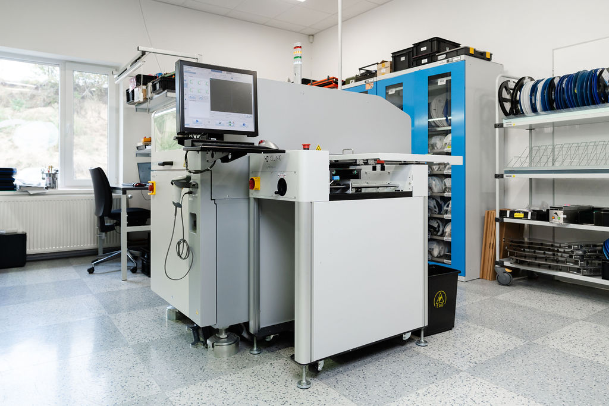

Pracoviště nanášení pasty

Otevřete pracovní plochu a připravte pájecí pastu na spodní straně DPS.
DPS – strana BOTTOM
Na obrázku jsou čtyři obdélníkové SMT plošky – dvě pro C3 a dvě pro C4. Klepněte na každou z nich. Šedá vrstva znázorňuje nanesenou pájecí pastu. Opětovným klepnutím můžete pastu z plošky odstranit.

Na menším displeji můžete obrázek vodorovně posouvat, aby šly plošky pohodlně označit prstem.